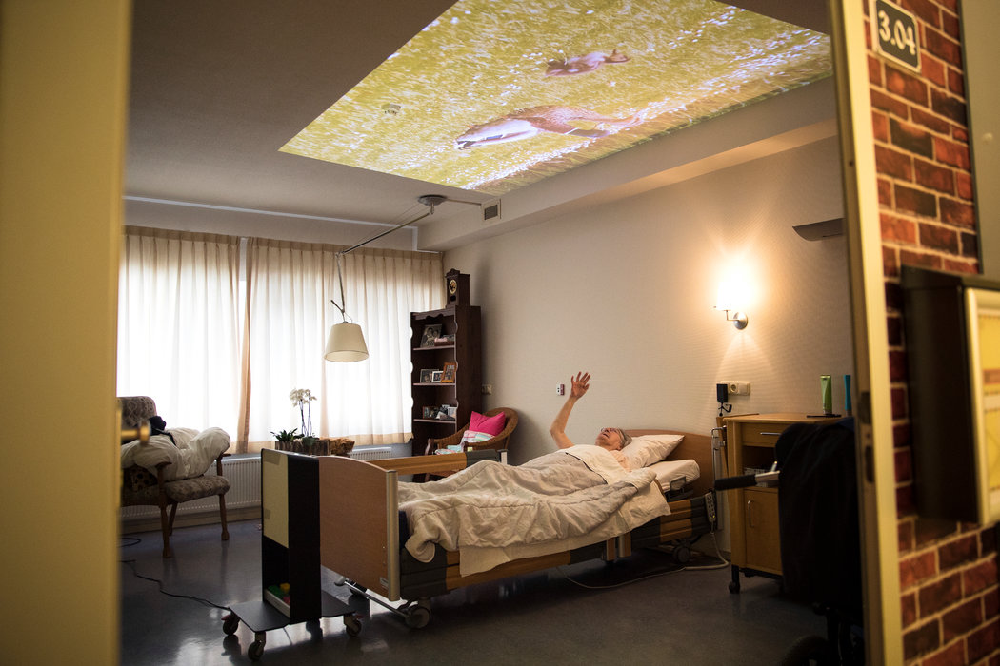
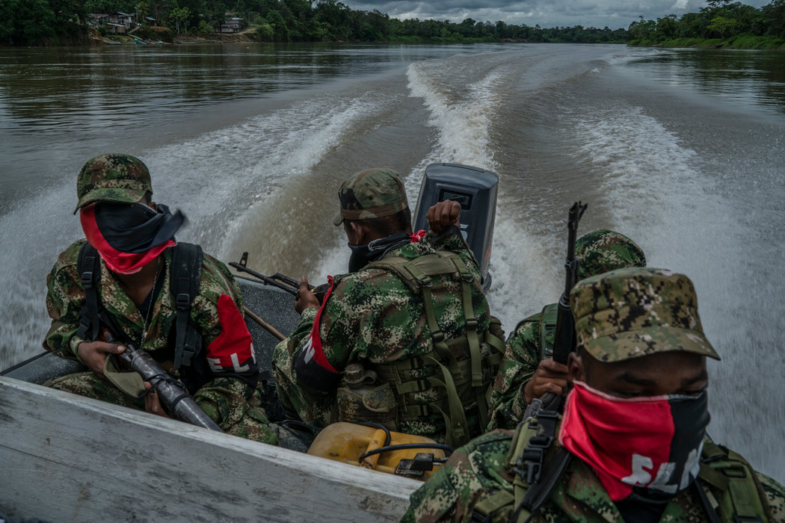
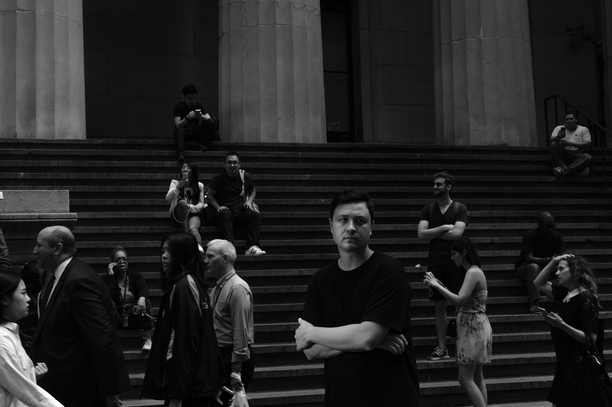
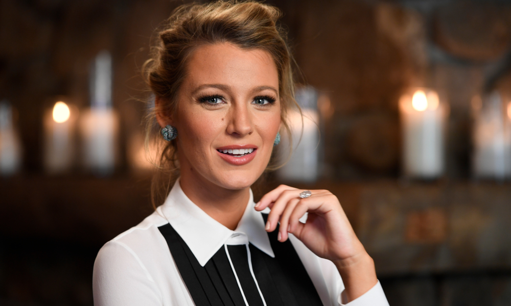

Muchos de los problemas en el mundo actual, si uno se detiene a pensar en ellos, exigen contestar una pregunta antigua: ¿qué es ser humano? Me parece que no hay una respuesta inmutable. Nosotros, los humanos, somos lo que concebimos que somos, y con ello me refiero a dos cosas: lo que queremos ser y lo que decimos que somos. Nuestras autoconcepciones son, a su vez, respuestas a condiciones que encontramos en nuestros entornos y esas condiciones cambian todo el tiempo dependiendo del tiempo y el lugar. La única forma de contestar esta pregunta es analizar cómo se ve una persona a sí misma y a los demás en el contexto de las condiciones sociales, culturales, económicas y políticas de su época.El ser humano no puede concebirse de manera abstracta.
Solo cuando vemos a la gente inmersa en sus experiencias —su posición social, educación y recuerdos, en busca de sus propios ideales— la pregunta “¿Qué es un ser humano?” tiene sentido en su cabalidad.Todo mundo parece estar de acuerdo con que hoy vivimos en una época totalmente peculiar. Podemos etiquetarla de distintas formas —la era de la globalización, de internet, del capitalismo tardío, del colapso de la ideología de la Guerra Fría—, pero todos esos términos buscan describir la nueva situación del mundo. La característica más sorprendente de esa situación es que tenemos más libertad que nunca de tener acceso a la información, al conocimiento y a la tecnología.
Al mismo tiempo, las fuerzas que tienden a limitar nuestras libertades personales —llámense Estado, religión, identidad étnica, grupos de intereses económicos, entre otros— están disolviéndose y reorganizándose. Algunas están muriendo mientras que otras se están volviendo extraordinariamente fuertes.Dichos cambios pueden ser alucinantes. Pueden dificultarnos recordar dónde está nuestro hogar, reconocer el idioma y las costumbres que alguna vez dimos por hechos y descubrir a dónde pertenecemos ahora. La pregunta: “¿Qué es un ser humano?” o “¿Qué significa ser humano?” adquiere un rostro totalmente nuevo. Las respuestas hoy tendrán que ser distintas de las respuestas del pasado. Nuestros recursos para buscar respuestas a esta pregunta también varían de manera inevitable dependiendo de nuestras experiencias personales. En mi caso, por ejemplo, es evidente que, debido a mi paso por distintos entornos sociales, políticos, culturales y económicos —como artista en China, como prisionero político y ahora como expatriado—, me he visto obligado varias veces a modificar y ajustar mi comprensión de lo que es un ser humano. Simplemente evitar la pregunta es un error terrible.
Debemos hacerla y de manera reiterada. Los debates y los juicios que condujeron a la sabiduría humana en el pasado fueron respuestas, cada una en su tiempo, a esta misma pregunta, planteada en el contexto político y social de cada época, y pertinente en todos los niveles sociales: personal, comunitario, familiar y nacional. Muchos de los desacuerdos políticos y culturales que vemos en el mundo de hoy emergen de la renuencia a enfrentar esta pregunta clave con honestidad y a llegar a definiciones claras en relación con ella. La humanidad nos incluye a todos. Sin importar qué tan aterradoras puedan volverse las afrentas políticas y culturales que produzca la historia, nuestra última posesión irreductible, algo que sería obvio para nosotros si de repente nos pusieran en un desierto árido, es el respeto a la dignidad humana. Todo depende de cómo nos definimos y cómo tratamos a aquellos con los que compartimos nuestro entorno, donde abundan distintas etnias, religiones y culturas. Estamos condenados si perdemos el pensamiento independiente o la capacidad de evaluarnos y definirnos con libertad. En mi opinión, la autodefinición debe ser el principio más sólido de cada uno de nosotros. Es la piedra angular de la moralidad, la estética y la filosofía práctica. Si desaparece, incluso por unos segundos, entonces la respuesta a la pregunta “¿Qué significa ser humano?” será: “Nada”.
Un tratamiento innovador para la demencia: fomentar la felicidad
DOETINCHEM, Países Bajos — “Estamos perdidos”, le dijo Truus Ooms, de 81 años, a su amiga Annie Arendsen, de 83, mientras iban en un autobús.“Eres el conductor, realmente deberías saber dónde estamos”, le dijo entonces Arendsen a Rudi ten Brink, de 63 años, que estaba sentado al volante del autobús. Pero todo era una broma.Los tres, que sufren de demencia, son pacientes en un centro de atención especializada en el este de los Países Bajos. Su viaje en autobús —una ruta en las carreteras planas y flanqueadas de árboles del campo neerlandés— era una simulación que se proyecta varias veces al día en tres pantallas.
Es parte de un enfoque poco ortodoxo en el tratamiento contra la demencia que médicos y cuidadores de Países Bajos están experimentando: aprovechar el poder de la relajación, los recuerdos de la infancia, los recursos sensoriales, la música reconfortante, la estructura familiar y otras herramientas para curar, calmar y estimular a los residentes. Implementan todo eso en vez de depender de la vieja receta médica de descanso en cama, medicamentos y, en algunos casos, restricciones físicas y amarres.
“Cuanto más estrés se reduzca, mejor”, dijo Erik Scherder, neuropsicólogo de la Universidad Libre de Ámsterdam y uno de los especialistas en el tratamiento de la demencia más reconocidos del país. “Si puedes reducir el estrés y la incomodidad, hay un efecto fisiológico directo”.Los viajes simulados en autobús o a la playa —como el recreado en un centro de atención en Haarlem, que no está muy lejos de una playa de verdad— se vuelven un punto de reunión para los pacientes. La experiencia compartida les permite hablar de viajes previos y tomar unas minivacaciones de su vida diaria. Seguir leyendo la noticia

El ELN ofrece rehenes para continuar el diálogo con el nuevo gobierno de Colombia
LA HABANA — El domingo 19 de agosto, en el subsuelo de un hotel de la capital cubana, el jefe negociador del Ejército de Liberación Nacional en las conversaciones con el gobierno de Colombia, Pablo Beltrán, aseguró a The New York Times que el ELN liberará pronto a nueve secuestrados. “Son cuatro soldados, tres policías y dos contratistas militares”, dijo el guerrillero de 64 años, cuyo nombre real es Israel Ramírez Pineda. Al día siguiente, el ELN difundió un video con pruebas de supervivencia donde tres de los prisioneros enviaban mensajes desde la selva.
Durante la entrevista con The New York Times, aunque no aportó datos precisos, Beltrán señaló también que era “muy posible” que hubiera más secuestrados en poder del ELN y que están dispuestos a entregarlos en el futuro. Según fuentes en la delegación negociadora del movimiento guerrillero, el gobierno de Iván Duque, elegido el 17 de junio, exigió una liberación como gesto humanitario y pidió que se concretara antes de la toma de posesión, celebrada el 7 de agosto. De acuerdo con el ELN, retrasos en los protocolos de seguridad han demorado la entrega. Beltrán cursó estudios de ingeniería y empezó como guerrillero urbano en los años ochenta. Ha sido sentenciado a 39 años de prisión por el secuestro de un avión comercial en 1999. Es miembro del Comando Central que dirige el ELN y suele ser considerado su vocero internacional. A lo largo de los últimos veinte años ha participado en distintas conversaciones de paz entre ese movimiento marxista y varios presidentes de Colombia.Instalado en La Habana desde mayo de este año —luego de que la mesa de negociación fuera trasladada desde Quito, Ecuador—, Beltrán espera que el gobierno entrante designe a sus nuevos delegados. Declaró que estaban listos para silenciar los fusiles por un tiempo.
“Con el gobierno del expresidente Juan Manuel Santos avanzamos un 90 por ciento y dejamos casi listo el diseño para un nuevo cese al fuego bilateral”, dijo.Las Fuerzas Armadas de Colombia y el ELN ya han suspendido sus combates en ocasiones anteriores, pero siempre han sido acuerdos parciales: las tropas no abandonan sus posiciones ni sus objetivos militares. Solo detienen temporalmente las acciones ofensivas. Actos bélicos como los secuestros de militares, la detención de guerrilleros y la voladura de oleoductos continúan. Esta semana, en El Tarra, al nororiente del país, fue capturado quien es conocido como Brayan, el supuesto jefe de finanzas del ELN, en la región del Catatumbo, junto a otros cuatro miembros de esta guerrilla. Seguir leyendo la noticia

El papa Francisco visita una Irlanda distinta
MURRISK, Irlanda – En la montaña sagrada donde se dice que San Patricio ayunó antes de desterrar a todas las serpientes de Irlanda al mar, Geraldine Reilly caminó cerca de una oveja que estaba pastando, una estatua del santo patrono nacional y un letrero que dice a los peregrinos cómo ganar indulgencias a través de la oración “para los propósitos de nuestro santo padre el papa”. Reilly dijo que mejor esperaba conseguir una indulgencia este mes al rezar directamente con el papa Francisco en Dublín, en el Encuentro Mundial de Familias, durante su visita el 25 y 26 de agosto. “Parece ser más cercano a la gente”, dijo Reilly, de 60 años, residente del pequeño pueblo de Kilcogy “y en sintonía con los nuevos tiempos”.
Irlanda ha pasado por muchos cambios en los últimos cuarenta años. La Iglesia irlandesa fue alguna vez el cimiento del catolicismo europeo; exportaba curas a todo el mundo y formaba la identidad, las leyes y la cultura del país. En 1979, cuando Juan Pablo II hizo su última visita papal al lugar, el divorcio, los actos homosexuales y el aborto eran ilegales.Pero, en las décadas siguientes, el escándalo de abusos sexuales por parte del clero, la separación forzada de niños de los brazos de sus madres solteras y otros terribles abusos en contra de católicos vulnerables apresuraron el florecimiento de la modernidad secular y la evaporación de la autoridad de la Iglesia. Francisco llega ahora a un país que fue el primero en Europa en legalizar el matrimonio igualitario por consenso popular, que tiene un primer ministro gay y que en mayo votó abrumadoramente para eliminar la prohibición al aborto de su Constitución.
La gran pregunta, entonces, es qué diferencia puede hacer Francisco en un país que se ha convertido en pionero de la erosión de la Iglesia en Occidente. Algunos dentro de la Iglesia dicen que el primer papa latinoamericano no debería empantanarse en una isla que parece pertenecer al pasado de la Iglesia.Sin embargo, otros prelados y defensores de los sobrevivientes de abuso sexual creen que esta visita, que coincide precisamente con revelaciones nuevas y escandalosas sobre abusos sexuales y encubrimientos en Estados Unidos, Chile e Irlanda, le da a Francisco una excelente oportunidad para reconocer los pecados sistemáticos de la jerarquía eclesiástica y de la burocracia del Vaticano que mantuvieron en secreto los abusos y, de hecho, implementar medidas para hacer algo al respecto. Seguir leyendo la noticia
Lo más reciente
No somos humanos cuando nacemos
¿Qué significa ser humano? La inmensidad de esta pregunta puede reducirse a un viejo principio propuesto por el filósofo alemán Hegel, que atribuyó a su colega filósofo Baruch Spinoza: “Toda determinación es negación”.Pero ¿negación de qué?Primero, de Dios. En el principio estaba Dios, la fuente de la acción infinita. En la tradición occidental, un hombre no tiene propósito sin Dios. Para los cristianos, el hombre fue creado a imagen y semejanza de Dios; para los judíos, Dios es un buen trabajador que nos da una mano. Para los ateos (quienes, no lo olvidemos, son judeocristianos a su manera), el propósito del hombre es en parte destronar a Dios. Si esta no es una absoluta negación de Dios, entonces al menos limita su poder, ya que los humanos llegan a ocupar el espacio que antes estaba reservado únicamente para Dios.
La determinación también es una negación de la naturaleza. Nadie negará —en especial Spinoza— que un humano es natura naturata, una cosa entre las cosas, una naturaleza entre las naturalezas, una figura del mundo tejida de la misma fibra que todas las otras figuras ordinarias. Pero ser humano también es desear la trascendencia, aspirar a ser más que solo un pedacito de naturaleza.En su época, el filósofo René Descartes reflexionó sobre la diferencia entre los humanos y las máquinas. Hoy, en la cúspide de la revolución de la inteligencia artificial, cavilamos sobre una pregunta similar: ¿cómo podremos diferenciar a un humano auténtico de uno sintético?
Un humano auténtico es res cogitans, una cosa pensante, como Descartes señaló. Una fuente de “intencionalidad”, como escribió el filósofo Edmund Husserl. Ser humano significa dar un salto fuera del orden natural. Para ser humano hay que escaparse, de una u otra forma, de esa masa de átomos, células y partículas de las que tú y yo y todo lo demás está compuesto. Es haber nacido con un alma, la cual —incluso si es inmaterial, si no tiene extensión ni densidad, incluso si es perfectamente invisible, intocable e impredecible— actúa como un pasaporte que nos saca de la naturaleza y nos adentra en nuestra esencia humana. Seguir leyendo la noticia

La mejor inversión
Cuando los niños son impulsados por sus padres en cualquier deporte, y lo hacen desde temprana edad, obtienen grandes resultados en disciplina y carácter. Esta comprobado. Por ejemplo, despues de que el primer contacto con la natación es por seguridad -los llevan a las escuelas a que aprendan a nadar-, muchos de estos niños encuentran una disciplina que les permite desarrollarse como parte de una sociedad. Ahi aprenden a entender que la vida misma es una competencia, y que independientemente de los resultados o la obtencion de medalllas, el deporte les ayudara a trabajar para ser triunfadores y para saber manejar las derrotas.
Para muchos padres, seguir con un deporte significa un gasto innecesario, una peridida de tiempo; otros, entienden que es el mejor camino para que sus hijos se desarrollen en un ambiente sano y no lamentarse porque los fines de semana solamente piensan en salir de fiesta. Y si tienes cualidades, el deporte te da la oportunidad de obtener becas, ahorrar hasta 50 mil dolares al año y obtener una educacion de primer nivel, incluso en el extranjero, hacer curriculum. Por eso es que la mejor inversion con sus hijos en estos tiempos de inseguridad y crimen en llevarlos por el camino y disciplina del eporte, pero no solo hacer ejercicio, sino el de la alta competencia, que finalmente ayuda, a formar ciudadanos de bien.
Kelly Marie Tran: No dejaré que me marginen
Nota: La actriz eliminó sus publicaciones de Instagram en junio como reacción al reiterado acoso en redes.
Aquí habla por primera vez al respecto.No fueron sus palabras, sino el hecho de que comencé a creer lo que decían. Lo que decían parecía confirmar lo que ya había interiorizado como mujer y persona no blanca: que pertenezco a los márgenes y a los espacios laterales, que solo valgo como un personaje menor en sus vidas y en sus historias. Esas palabras despertaron en mí un sentimiento que pensé que había dejado atrás. El mismo que tuve a los 9, cuando dejé de hablar vietnamita por completo porque estaba cansada de escuchar cómo se burlaban de mí los otros niños. O a los 17, cuando salí a cenar con mi novio y su familia y la mesera, al escucharme ordenar mi comida con un inglés sin acento, dijo: “¡Wow! Qué lindo que vinieron con una estudiante de intercambio”.Las palabras reforzaron lo que había escuchado toda mi vida, que yo era “lo otro”, que no pertenecía, que no era suficientemente buena solo porque no era como ellos. Y ese sentimiento, ahora me doy cuenta, era y es la vergüenza por aquello que me hace distinta, por la cultura de la que provengo.
Y para mí, lo más decepcionante de todo es que sintiera esa vergüenza. Porque la misma sociedad que les enseñó a algunos que eran héroes y salvadores, los herederos del ideal del Destino Manifiesto, me enseñó a mí que yo solo existo como decorado de sus historias, ya sea pintándoles las uñas o diagnosticando sus enfermedades, apoyándolos en sus dilemas amorosos y —quizá lo más dañino— esperando a que ellos me rescaten.Por mucho tiempo les creí.Creí esas palabras y esas historias, cuidadosamente elaboradas por una sociedad construida para enaltecer el poder de un tipo de persona: un sexo, un color de piel, una existencia. Seguir leyendo la noticia
Se registra sismo de 4.8 grados con epicentro en Oaxaca
Se detallo que el temblor se genero a una profundidad de 10 kilometros y fue ubicado en las coordinadas 15.92 grados latitud norte y -95.16 grados longitud oeste.
Un sismo de una intensidad priliminar de 4.8 grados, con epicentro a 29 kilometros al sur de Salina Cruz, Oaxaca, se registro a las 18:39 horas de este sabado, informo el Servicio Sismologico Nacional (SSN). Mediante su cuenta en Twitter @SSNMexico , detallo que el temblor se genero a una profundidad de 10 kilometros y fue ubicado en las coordinadas 15.92 grados lalitud norte y -95.16 grados longitud oeste.
Blake Lively, la "Gossip Girl" más fashionista
Blake Lively nacio en Tarzana, Los Angeles, California el 25 de agosto de 1987 en medio de una familia dedicada a la industria de la actuacion. Su madre, Elaine Lively fue entrenadora fisica de actores y nager talent, mientras que su padre Ernie Lively es actor y director al igual que sus hermanos. Sin haber estudiado artes escenicas, el primer paple de Lively fue en la pelicula musical 'Sandman' (1998), dirigida por su padre, sin embargo, una oportunidad llego cuanod consiguio el un papel para la pelicula 'Uno para todas' en 2005. Aunque despues de dicha produccion Blake regreso a terminar la escuela secundaria, en 2007 interpreto a Serena Van Der Woodsen, en la serie 'Gossip Girl', personaje que la lanzaria a la fama internacional. A lo largo de su carrera, Blake ha tenido un sin fin de compromisos cinematograficos, como 'The Private Lives of Pippa Lee' (2009).
'The age of Adaline' (2015) y 'Green Lantern' (2011), en esta ultima, Blake comenzo una relacion con su conprotagonista Ryan Reynolds para una año mas tarde contraer matrimonio. La pareja recibio en 2014 a su primer hija, James y en 2016 nacio Inez. Dentro de la industria de la moda, Blake ha tenido colaboracion en las campañas publicitarias de marcas de alta costura como Channel y Gucci, principalmente. Actualmente se le reconoce como icono de la moda gracias a su camaleonico estilo que le permite desfilar por las calles y las principales alfombras rojas vestidas de increibles looks firmados por disañadores de renombre tal y como lo hizo en el MET Gala de este año presumiendo un atuendo de Atelier Versace confeccionado en 600 horas. Recientemente se le vio por Nueva York con un glamuroso traje de terciopelo durante la promocion de su ultimo trabajo cinematografico 'a simple favor' y fue invitada a los MTV VMA's 2018 en donde deslumbro en la alfombra rosa con un traje blanco cortesia de Ralph & Russo. Ya sea como actriz, modelo o it-girl, Blake Lively roba miradas a propios y extraños por su belleza y glamour.

Khloé Kardashian estrena imagen
Khloé Kardashian hizo alarde de su nuevo look en redes sociales días después de expresar en Snapchat su deseo de cortar su cabello una vez que bajae un par de libras. La imagen de su nuevo look la acompañó con la frase “No sonreír me hace sonreír” Kanye, haciendo referencia a su cuñado.La rubia platinada mostró el largo de su melena y lo combinó con maquillaje perfecto y labios voluptuosamente rosas. A la vez que compartía la sencilla, pero glamurosa imagen, la estrella mostró varias historias del festejo del cumpleaños de su abuela en Los Ángeles mientras vestía lo que parece ser un revelador vestido blanco corto y sostenía una botella de vodka.